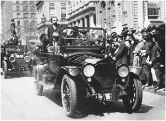

The motorcade in New York City, April 4, 1921
纽约城的车队，1921年4月4日
Kinship 纽带
In the article he wrote for The Times of London after the confirmation of his relativity theory, Einstein quipped that if things went bad the Germans would no longer consider him a compatriot but instead a Swiss Jew. It was a clever remark, made more so because Einstein knew, even then, that there was an odious smell of truth to it. That very week, in a letter to his friend Paul Ehrenfest, he described the mood in Germany. “Anti-Semitism is very strong here,” he wrote. “Where is this all supposed to lead?”1
在相对论得到证实之后，爱因斯坦为伦敦的《泰晤士报》写了一篇文章。他在文中调侃道，要是相对论搞砸了，德国人肯定会把他当成瑞士的犹太人，而不再认为是自己的同胞。这种说法很有点先知先觉的味道。那时爱因斯坦已经感觉到了这种令人不快的气氛。在同一周写给好友埃伦菲斯特的信中，他描述了德国当时的情况。“这里的排犹情绪非常浓厚，”他写道，“下一步会如何发展呢？”
The rise of German anti-Semitism after World War I produced a counterreaction in Einstein: it made him identify more strongly with his Jewish heritage and community. At one extreme were German Jews such as Fritz Haber, who did everything they could, including converting to Christianity, to assimilate, and they urged Einstein to do the same. But Einstein took the opposite approach. Just when he was becoming famous, he embraced the Zionist cause. He did not officially join any Zionist organization, nor for that matter did he belong to or worship at any synagogue. But he cast his lot in favor of Jewish settlements in Palestine, a national identity among Jews everywhere, and the rejection of assimilationist desires.
第一次世界大战以后，德国反犹主义开始抬头，这使得爱因斯坦更加强烈地意识到了自己的犹太血统和归属。在当时，像哈伯这样的德国犹太人是一个极端，他们竭尽全力使自己同化，甚至阪依基督教，还劝说爱因斯坦也这样做。但爱因斯坦的做法完全相反，他刚一成名便投身于犹太复国主义运动。虽然他从未正式加入过任何犹太复国主义组织，也没有因此而隶属于任何犹太教会，或在犹太会堂做礼拜，但他赞成在巴勒斯坦修建犹太人定居点，为全体犹太人的民族认同而奔走，为抵制同化主义的影响而奔走。
He was recruited by the pioneering Zionist leader Kurt Blumenfeld, who paid a call on Einstein in Berlin in early 1919. “With extreme naïveté he asked questions,” Blumenfeld recalled. Among Einstein’s queries: With their spiritual and intellectual gifts, why should Jews be called on to create an agricultural nation-state? Wasn’t nationalism the problem rather than the solution?
1919年年初，犹太复国主义运动的领导人库尔特·布卢门菲尔德在柏林拜访了爱因斯坦，请求他的帮助。“他带着天真的神情向我发问。”布卢门菲尔德回忆说。爱因斯坦的疑问包括：以犹太人在精神和智力上的禀赋，为什么要去建立一个单一民族的独立国家？民族主义难道不恰恰是问题，而不是问题的解决吗？
Eventually, Einstein came around to the cause. “I am, as a human being, an opponent of nationalism,” he declared. “But as a Jew, I am from today a supporter of the Zionist effort.”2 He also became, more specifically, an advocate for the creation of a new Jewish university in Palestine, which eventually became Hebrew University in Jerusalem.
爱因斯坦最终还是被说服了。“从做人的态度上讲，我反对民族主义，”他宣称，“但作为犹太人，我从今天开始支持犹太复国主义者的努力。” 他还提议在巴勒斯坦新建一所犹太人的大学，这就是后来耶路撒冷的希伯来大学。
Once he decided to abandon the postulate that all forms of nationalism were bad, he found it easy to embrace Zionism with greater enthusiasm. “One can be an internationalist without being indifferent to members of one’s tribe,” he wrote a friend in October 1919. “The Zionist cause is very close to my heart ...I am glad that there should be a little patch of earth on which our kindred brethren are not considered aliens.”3
既然不再坚持一切形式的民族主义都是坏的，他自然会更加热情地拥护犹太复国主义。“一个人可以既是国际主义者，同时又关心其部族成员，”他1919年10月给一位朋友写信说，“犹太复国主义事业于我心有戚戚……我很高兴地球上能有一小块土地，在那里我们的同胞兄弟不再被视作异己。”
His support for Zionism put Einstein at odds with assimilationists. In April 1920, he was invited to address a meeting of one such group that emphasized its members’ loyalty to Germany, the German Citizens of the Jewish Faith. He replied by accusing them of trying to separate themselves from the poorer and less polished eastern European Jews. “Can the ‘Aryan’ respect such pussyfooters?” he chided.4
由于支持犹太复国主义，爱因斯坦与民族同化论者产生了不和。1920年4月，一个强调效忠于德国的组织“犹太教德国公民中央协会”邀请他在会议上发表讲演。爱因斯坦指责他们企图脱离那些更为穷苦和寒酸的东欧犹太人。“‘雅利安人’可能尊重这种持骑墙态度的人吗？”他斥责道。
Privately declining the invitation was not enough. Einstein also felt compelled to write a public attack on those who tried to fit in by talking “about religious faith instead of tribal affiliation.”* In particular, he scorned what he called “the assimilatory” approach that sought “to overcome anti-Semitism by dropping nearly everything Jewish.” This never worked; indeed, it “appears somewhat comical to a non-Jew,” because the Jews are a people set apart from others. “The psychological root of anti-Semitism lies in the fact that the Jews are a group of people unto themselves,” he wrote. “Their Jewishness is visible in their physical appearance, and one notices their Jewish heritage in their intellectual work.”5
仅有私下里的拒绝还不够，爱因斯坦感到有必要再写一篇文章，公开抨击那些只谈“宗教信仰，不谈部族联系” 以求顺应的人。他特别嘲笑了那种企图“通过几乎放弃犹太人的一切来克服反犹主义”的“同化”方法。这种做法不仅从未取得过成效，而且“在非犹太人看来也显得可笑”，因为犹太人是一个与众不同的民族。“反犹主义的心理根源在于犹太人自成一体这样一个事实，”他写道，“其犹太特性显示在他们的身体外貌上，人们在其思想成果中看到了他们的犹太遗产。”
The Jews who practiced and preached assimilation tended to be those who took pride in their German or western European heritage. At the time (and through much of the twentieth century), they tended to look down on Jews from eastern Europe, such as Russia and Poland, who seemed less polished, refined, and assimilated. Although Einstein was German Jewish, he was appalled by those from his background who would “draw a sharp dividing line between eastern European Jews and western European Jews.” The approach was doomed to backfire against all Jews, he argued, and it was not based on any true distinction. “Eastern European Jewry contains a rich potential of human talents and productive forces that can well stand the comparison to the higher civilization of western European Jews.”6
那些实行和鼓吹同化的犹太人往往会扬扬自得于他们的德国或西欧血统。当时（以及20世纪的大部分时间），他们不太瞧得起来自俄国和波兰等国的东欧犹太人，因为这些人看上去不够文雅和有教养，同化程度也不深。尽管爱因斯坦是德国犹太人，但他仍然惊诧于这些与他出身相同的人竟然会“在西欧犹太人与东欧犹太人之间划分明确的界限”。他认为，这种做法注定会对所有犹太人产生不利影响，因为它所基于的区分并不真实。“东欧犹太人中间潜藏的巨大才能和生产力，足以与西欧犹太人的较高文明相媲美。”
Einstein was acutely aware, even more than the assimilationists, that anti-Semitism was not the result of rational causes. “In Germany today hatred of the Jews has taken on horrible expressions,” he wrote in early 1920. Part of the problem was that inflation was out of control. The German mark had been worth about 12 cents at the beginning of 1919, which was half of its value from before the war but still manageable. But by the beginning of 1920, the mark was worth a mere 2 cents, and collapsing further each month.
爱因斯坦甚至比同化论者更为敏锐地认识到，反犹主义并非源于理性。“在今天的德国，对犹太人的仇恨已经表现得有些骇人。”他在1920年年初写道。问题部分出在通货膨胀正在失去控制。德国马克在1919年年初的价值为12美分，这虽然只抵得上战前价值的一半，但尚在可控范围之内。而到了1920年年初，1马克仅值2美分，而且还在逐月贬值。
In addition, the loss of the war had been humiliating. Germany had lost 6 million men and then was forced into surrendering land containing half of its natural resources, plus all of its overseas colonies. Many proud Germans believed it must have been the result of betrayal. The Weimar Republic that had emerged after the war, though supported by liberals and pacifists and Jews such as Einstein, was disdained by much of the old order and even the middle class.
不仅如此，战争的失败一直让人觉得脸上无光。德国损失了600万人，换来的却是割让占一半自然资源的土地以及所有海外殖民地。许多自命不凡的德国人相信，这一定是因为有人出卖。战后成立的魏玛共和国虽然得到了自由主义者、和平主义者以及像爱因斯坦这样的犹太人的支持，却遭到了大多数旧势力甚至是中产阶级的鄙视。
There was one group that could be easily cast as the alien and dark force most responsible for the humiliation facing a proud culture.“People need a scapegoat and make the Jews responsible,” Einstein noted. “They are a target of instinctive resentment because they are of a different tribe.”7
有一个群体最容易为人所不容。他们被视为一股恶势力，最应该对这种高傲的文化所面临的屈辱负责。“人们需要一只替罪羊，于是便归咎于犹太人，”爱因斯坦指出，“他们是本能怨恨的发泄目标，因为他们是一个与众不同的部族。”
Weyland, Lenard, and the Antirelativists 魏兰德、勒纳德和反相对论者
The explosion of great art and ideas in Germany at the time, as Amos Elon wrote in his book The Pity of It All, was largely due to Jewish patrons and pioneers in a variety of fields. This was particularly true in science. As Sigmund Freud pointed out, part of the success of Jewish scientists was their “creative skepticism,” which arose from their essential nature as outsiders.8 What the Jewish assimilationists underestimated was the virulence with which many Germans, whom they considered to be their fellow countrymen, in fact saw them as essentially outsiders or, as Einstein put it, “a different tribe.”
正如阿莫斯·埃隆在其《一切之憾》（The Pity It All）中所指出的，当时德国艺术和思想的繁荣在很大程度上应归功于各个领域的犹太资助者和先驱者。在科学领域尤其如此。弗洛伊德指出，犹太科学家所取得的成功部分在于他们“创造性的怀疑论”，这源自于他们的局外人本性。 那些犹太同化论者没有看到，许多被他们当作同胞的德国人其实视他们为异类，或如爱因斯坦所说，把他们看成“一个不同的部族”。
Einstein’s first public collision with this anti-Semitism came in the summer of 1920. A shady German nationalist named Paul Weyland, an engineer by training, had turned himself into a polemicist with political aspirations. He was an active member of a right-wing nationalistic political party that pledged, in its 1920 official program, to “diminish the dominant Jewish influence showing up increasingly in government and in public.”9
1920年夏，爱因斯坦第一次与这种反犹主义公开发生冲突。正在接受培训的工程师、臭名昭著的德国民族主义者保罗·魏兰德，成了一个有政治野心的辩论家。他是一个右翼民族主义政党的激进分子，该党在1920年的正式纲领中誓言“削弱犹太人在政府和公众中日益显著的影响”。
Weyland realized that Einstein, as a highly publicized Jew, had engendered resentment and jealousy. Likewise, his relativity theory was easy to turn into a target, because many people, including some scientists, were unnerved by the way it seemed to undermine absolutes and be built on abstract hypotheses rather than grounded in solid experiment. So Weyland published articles denouncing relativity as “a big hoax” and formed a ragtag (but mysteriously well-funded) organization grandly dubbed the Study Group of German Scientists for the Preservation of a Pure Science.
魏兰德意识到，爱因斯坦作为一个知名度极高的犹太人，已经招致了怨恨和嫉妒。他的相对论也很容易成为众矢之的，包括一些科学家在内的许多人都不满于它，因为它似乎颠覆了绝对性，而且建立在抽象的假说而非牢靠的实验基础上。魏兰德发表文章谴责相对论是“一场大骗局”，还成立了一个由乌合之众组成的团体（然而资金却很充足，并给它起了一个冠冕堂皇的名字——“德国科学家维护科学纯洁研究小组”。
Joining with Weyland was an experimental physicist of modest reputation named Ernst Gehrcke, who for years had been assailing relativity with more vehemence than comprehension. Their group lobbed a few personal attacks at Einstein and the “Jewish nature” of relativity theory, then called a series of meetings around Germany, including a large rally at Berlin’s Philharmonic Hall on August 24.
加入魏兰德队伍的还有一位名头不大的实验物理学家恩斯特·格尔克。多年来，他一直在猛烈攻击相对论，不过更多是出于恶意，而不是为了真理。他们的小组对爱因斯坦和相对论的“犹太性”屡次进行人身攻击，还在全德国组织了一系列会议，包括8月24日在柏林爱乐音乐厅举行的一次大型集会。
Weyland spoke first and, with the orotund rhetoric of a demagogue, accused Einstein of engaging in a “businesslike booming of his theory and his name.” Einstein’s penchant for publicity, wanted or not, was being used against him, as his assimilationist friends had warned. Relativity was a hoax, Weyland said, and plagiarized to boot. Gehrcke said much the same with a more technical gloss, reading from a written text. The meeting, reported the New York Times, “had a decidedly antiSemitic complexion.”10
魏兰德第一个发言。他以一个蛊惑民心的政客所特有的腔调，指责爱因斯坦“对其理论和名声大肆吹噓”。正如爱因斯坦的同化论者朋友所警告的，无论如何，爱因斯坦对哗众取宠的嗜好正在给他惹来麻烦。魏兰德说，相对论是一场骗局，是靠剽窃发家的。格尔克也照本宣科讲了类似的话，只不过多了几分技术性。《纽约时报》报道说，这次会议“带有明显的反犹主义色彩”。
In the middle of Gehrcke’s talk, there arose from the audience a quiet murmur:Einstein, Einstein. He had come to see the circus and, averse neither to publicity nor controversy, laugh at the spectacle. As his friend Philipp Frank noted, “He always liked to regard events in the world around him as if he were a spectator in a theater.” Sitting in the audience with his friend the chemist Walther Nernst, he cackled loudly at times and at the end pronounced the entire event “most amusing.”11
在格尔克讲话时，听众席中传来一阵骚动：“爱因斯坦，爱因斯坦。”他也赶来观看了表演，并且无所顾忌地嘲笑这场闹剧。正如好友弗兰克所指出的：“他总喜欢关注周围世界发生的事情，宛如剧场里的一名观众。”他和化学家朋友能斯特坐在听众席中，不时发出爽朗的笑声，称整场表演“有趣极了”。
But he was not truly amused, and he even briefly considered moving away from Berlin.12 His anger aroused, he made the tactical mistake of responding with a highly charged diatribe that was published three days later on the front page of the Berliner Tageblatt, a liberal daily owned by Jewish friends. “I am well aware that the two speakers are unworthy of reply by my pen,” he said, but then proceeded not to be restrained by that awareness. Gehrcke and Weyland had not been explicitly anti-Semitic, nor did they overtly criticize Jews in their speeches. But Einstein alleged that they would not have attacked his theory “if I were a German nationalist, with or without a swastika, instead of a Jew.”13
当然，他并不是真的觉得有趣，甚至还一度考虑搬离柏林。 三天后，义愤填膺的爱因斯坦即以《柏林日报》（这是犹太人朋友办的一份自由派报纸）头版的一篇言辞激烈的骂文作为回应，这着实是一种战术性错误。“我非常清楚地知道，这两位演讲者都不值得我动笔去回应。，他说。但接下来，他并没有将这种认识真正贯彻下去。格尔克和魏兰德并未在演说中公开反犹，也没有公然批判犹太人，但爱因斯坦声称，“假如我是德国的民族主义者（无论是否戴‘卐’字徽），而不是犹太人”，他们就不会攻击他的理论。
Einstein spent most of his piece refuting Weyland and Gehrcke. But he also attacked a more reputable physicist who was not at the meeting but had given support to the antirelativity cause: Philipp Lenard.
爱因斯坦的文章主要驳斥了魏兰德和格尔克，但同时也攻击了一个更著名的物理学家。后者当时并不在场，但支持过反相对论运动。他就是勒纳德。
Winner of the 1905 Nobel Prize, Lenard had been a pioneer experimenter who described the photoelectric effect. Einstein had once admired him. “I have just read a wonderful paper by Lenard,” Einstein had gushed to Mari back in 1901. “Under this beautiful piece I am filled with such happiness and joy that I absolutely must share some of it with you.” After Einstein had published his first spate of seminal papers in 1905, citing Lenard by name in the one on light quanta, the two scientists had exchanged flattering letters.14
back in 1901. “Under this beautiful piece I am filled with such happiness and joy that I absolutely must share some of it with you.” After Einstein had published his first spate of seminal papers in 1905, citing Lenard by name in the one on light quanta, the two scientists had exchanged flattering letters.14
勒纳德曾是光电效应领域具有开创性的实验物理学家，获得过1905年的诺贝尔奖。爱因斯坦一度仰慕过他。“我刚刚读了勒纳德写的一篇出色论文”爱因斯坦1901年给米列娃写信说，“读罢这篇美文，我心中充满了幸福和喜悦，一定要和你分享其中的快乐。”爱因斯坦1905年发表第一批重要论文之后，两人曾经写过一些惺惺相惜的信，那篇光量子论文还提到了勒纳德的名字。
But as an ardent German nationalist, Lenard had become increasingly bitter about the British and the Jews, contemptuous of the publicity Einstein’s theory was garnering, and vocal in his attacks on the “absurd” aspects of relativity. He had allowed his name to be used on brochures that were distributed at Weyland’s meeting, and as a Nobel laureate he had worked behind the scenes to make sure that Einstein was not awarded the prize.
但是作为一名狂热的德国民族主义者，勒纳德变得越来越仇恨英国人和犹太人。他鄙视爱因斯坦的理论所获得的知名度，攻击相对论的“荒谬”之处。魏兰德会议上散发的小册子上俨然就印有他的名字。作为诺贝尔奖获得者，他曾经在幕后活动，试图阻止爱因斯坦得奖。
Because Lenard had refrained from showing up at the Philharmonic Hall rally, and because his published critiques of relativity had been academic in tone, Einstein did not need to attack him in his newspaper piece. But he did. “I admire Lenard as a master of experimental physics, but he has not yet produced anything outstanding in theoretical physics, and his objections to the general theory of relativity are of such superficiality that, up until now, I did not think it necessary to answer them,” he wrote. “I intend to make up for this.”15
由于勒纳德没有在柏林爱乐音乐厅的集会上露面，而且他对相对论发表的批评是学术腔调，爱因斯坦本来不需要在报纸上攻击他。但他还是这样做了。“我钦佩作为实验物理学大师的勒纳德，但他在理论物理学中并没有做出什么出色的成就，对广义相对论的反驳也是非常肤浅的，到目前为止我认为没有必要做出回应，”他写道，“现在我想弥补一下。”
Einstein’s friends publicly supported him. A group that included von Laue and Nernst published a letter claiming, not altogether accurately, “Whoever is fortunate enough to be close to Einstein knows that he will never be surpassed in his . . . dislike of all publicity.”16
爱因斯坦的朋友们公开声援他。劳厄和能斯特等人发表了一封信，并不十分准确地说：“任何一个有幸接近爱因斯坦的人都知道……在对哗众取宠的厌恶上，没有人能够超过他。”
Privately, however, his friends were appalled. He had been provoked into a display of public anger against those who should have remained unworthy of a reply by his pen, thus stirring up even more distasteful publicity. Max Born’s wife, Hedwig, who had freely scolded Einstein about his treatment of his family, now lectured, “[You should] not have allowed yourself to be goaded into that rather unfortunate reply.” He should show more respect, she said, for “the secluded temple of science.”17
然而在私下里，朋友们都吓坏了。爱因斯坦已经被触怒，对那些本不值得亲自回应的人公开表达愤慨，从而招致了更多令人不快的名声。曾经公开指责他对家庭处理不善的玻恩的妻子海德维希，现在说他“不应按捺不住情绪，做出这一相当不幸的回应”，并认为他应当对“寂寥的科学殿堂”显示出更多的尊敬。
Paul Ehrenfest was even harsher. “My wife and I absolutely cannot believe that you yourself wrote some of the phrases in the article,” he said. “If you really did write them down with your own hand, it proves that these damn pigs have finally succeeded in touching your soul. I urge you as strongly as I can not to throw one more word on this subject to that voracious beast, the public.”18
埃伦菲斯特说得更加严厉。“我妻子和我绝对无法相信你在文章中写了这样一些话，”他说，“如果它们果真是你本人所写，这证明这些该死的猪猡终于成功地扰乱了你的灵魂。我非常强烈地敦促你不要再就此话题向公众这头贪婪的野兽多说一个字。”
Einstein was somewhat contrite. “Don’t be too severe with me,” he replied to the Borns. “Everyone must, from time to time, make a sacrifice on the altar of stupidity, to please the deity and mankind. And I did so thoroughly with my article.”19 But he made no apologies for flunking their standards of publicity avoidance. “I had to do this if I wanted to stay in Berlin, where every child recognizes me from photographs,” he told Ehrenfest. “If one believes in democracy, then one must grant the public this much right as well.”20
爱因斯坦有些懊悔。“请不要对我太过苛责，”他给玻恩夫妇回信说，“在愚蠢这座祭坛上，有时任何人都要做出牺牲，以取悦神人。我是以我的文章做出牺牲的。” 但他并未就自己的抛头露面道歉，“如果我想待在柏林，就不得不这样做。在柏林，每一个孩子都能从照片上认出我来，”他告诉埃伦菲斯特，“如果一个人是民主主义者，他就必须也给人以民主的权利。”
Not surprisingly, Lenard was outraged by Einstein’s article. He insisted on an apology, as he had not even been part of the antirelativity rally. Arnold Sommerfeld, chairman of the German Physical Society, tried to mediate, and he urged Einstein “to write some conciliatory words to Lenard.”21 It was not to be. Einstein refused to back down, and Lenard ended up edging ever closer to being an outright antiSemite and later a Nazi.
不用说，勒纳德对爱因斯坦的这篇文章暴跳如雷。他坚持要爱因斯坦道歉，因为他并没有参与反相对论集会。德国物理学会主席索默菲试图从中调停，他敦促爱因斯坦“给勒纳德写一些安抚之辞”。 但爱因斯坦拒绝妥协。勒纳德最终变本加厉地公开反犹，成为一名纳粹。
(There was one odd coda to this event. In 1953, according to declassified documents in Einstein’s FBI file, a well-dressed German walked into the FBI field office in Miami and told the receptionist he had information that Einstein had admitted to being a communist in an article in Berliner Tageblatt in August 1920. The aspiring informer was none other than Paul Weyland, who had landed in Miami and was trying to emigrate after years of being a con man and swindler all over the world. J. Edgar Hoover’s FBI was eagerly trying to prove, with no success, that Einstein was a communist, and took up the cause. After three months, the Bureau finally found the article and translated it. There was nothing about being a communist in it. Weyland was, nevertheless, granted American citizenship.)22
（这件事有一个奇特的结局。根据美国联邦调查局爱因斯坦档案中解密文件的说法，1953年，一个穿着考究的德国人走进了迈阿密的联邦调查局办公室，声称有消息指出，爱因斯坦曾经在1920年8月《柏林日报》的一篇文章中承认过自己是共产主义者。这位热心的通报者不是别人，正是魏兰德。在全世界行骗多年之后，他到了迈阿密，正试图移民美国。J.埃德加·胡佛的美国联邦调查局正苦于无法证明爱因斯坦是共产主义者，便开始着手调查。三个月后，联邦调查局终于找到了那篇文章并做了翻译，但其中并无任何关于爱因斯坦是共产主义者的内容。不过，魏兰德还是得到了美国国籍。）
The public crossfire coming out of the antirelativity rally heightened interest in the upcoming annual meeting of German scientists, scheduled for late September in the spa town of Bad Nauheim. Both Einstein and Lenard were to attend, and Einstein had ended his newspaper response by proclaiming that, at his suggestion, a public discussion of relativity would occur there. “Anyone who can dare face a scientific forum can present his objections there,” he said, tossing a gauntlet in Lenard’s direction.
因反相对论集会而引发的公开交火激起了人们对9月底将在温泉小城巴特瑙海姆（Bad Nauheim）召开的德国科学家年会的兴趣。爱因斯坦和勒纳德都会参加这次会议。爱因斯坦还在那篇报纸文章的结尾宣布，根据他的建议，届时将举行一场关于相对论的公开辩论。“任何敢于直面科学讨论的人都可以在那里提出他的反驳”，这话显然直指勒纳德。
During the weeklong gathering in Bad Nauheim, Einstein stayed with Max Born in Frankfurt, twenty miles away, and the two men commuted to the resort town by train each day. The big showdown over relativity, at which both Einstein and Lenard were expected to participate, was on the afternoon of September 23. Einstein had forgotten to bring anything to write with, so he borrowed the pencil of the person next to him in order to take notes while Lenard talked.
在巴特瑙海姆为期一周的会议中，爱因斯坦和玻恩待在20英里以外的法兰克福，两人每天乘火车前往这座疗养胜地城市。9月23日下午，期盼已久的爱因斯坦与勒纳德的决战终于打响。爱因斯坦忘了带笔，于是向邻座借了一支铅笔，边听勒纳德说话边做笔记。
Planck was in the chair, and by both his commanding presence and soothing words he was able to prevent any personal attacks. Lenard’s objections to relativity were similar to those of many nontheorists. The theory was built on equations rather than observations, he said, and it “offends against the simple common sense of a scientist.” Einstein replied that what “seems obvious” changes over time. That was true even of Galileo’s mechanics.
会议由普朗克主持，他的威仪和抚慰人心的话语使得会上没有出现任何人身攻击。勒纳德对相对论的反驳与许多非理论家如出一辙。他说，相对论的基础是方程而不是观察，它“违反了一个科学家单纯的良知”。爱因斯坦回复说，什么东西“看起来显然”因时代而变，即使伽利略的力学也不例外。
It was the first time that Einstein and Lenard had met, but they did not shake hands or speak to each other. And though the official minutes of the meeting do not record it, Einstein apparently lost his equanimity at one point. “Einstein was provoked into making a caustic reply,” Born recalled. And a few weeks later, Einstein wrote Born to assure him that he would “not allow myself to get excited again as in Nauheim.”23
这是爱因斯坦与勒纳德的首次会面，但他们没有握手，也没有交谈。尽管官方的会议记录里没有记载，但爱因斯坦显然一度失去了镇定。“爱因斯坦忍不住做了刻薄的回应。”玻恩回忆说。几周以后，爱因斯坦给玻恩写信保证，他以后不会“再像在巴特瑙海姆那样激动了”。
Finally, Planck was able to end the session, before any blood was drawn, with a limp joke. “Since the theory of relativity unfortunately has not so far been able to extend the absolute time available for this meeting,” he said, “ it must now be adjourned.”The papers the next day were left without headlines, and the antirelativity movement subsided for the time being.24
最后，普朗克以一个勉强的玩笑结束了会议，以免酿成更大的冲突。“非常遗憾，鉴于到目前为止相对论没有办法延长本次会议所需的绝对时间，”他说，“现在必须暂时休会了。”第二天报纸上没有什么特别报道，反相对论运动暂时平息下去了。
As for Lenard, he distanced himself from the weird group of original antirelativists. “Unfortunately Weyland turned out to be a crook,” he later said. But he did not let go of his own antipathy toward Einstein. After the Bad Nauheim meeting he became increasingly vitriolic and anti-Semitic in his attacks on Einstein and “Jewish science.” He became a proponent of creating a “Deutsche Physik” that purged German physics of Jewish influences, which to him was exemplified by Einstein’s relativity theory with its abstract, theoretical, and nonexperimental approach and its odor (at least to him) of a relativism that rejected absolutes, order, and certainties.
至于勒纳德，则疏远了原先那个怪异的反相对论组织。“不幸的是，魏兰德原来是个骗子”，他后来说。但他对爱因斯坦的憎恶并没有减少。在巴特瑙海姆的会议之后，他愈发激烈地攻击爱因斯坦和“犹太科学”。他鼓吹创建一种“德意志物理学”，将德国物理学中的犹太流毒肃清。在他看来，首当其冲的就是爱因斯坦的相对论及其理论的、非实验的抽象方法，以及它拒斥绝对、秩序和必然性的（至少在他看来的）相对主义味道。
A few months later, at the beginning of January 1921, an obscure Munich party functionary picked up the theme. “Science, once our greatest pride, is today being taught by Hebrews,” Adolf Hitler wrote in a newspaper polemic.25 There were even ripples that made it across the Atlantic. That April, the Dearborn Independent, a weekly owned by automaker Henry Ford, a strong anti-Semite, blared a banner headline across the top of its front page. “Is Einstein a Plagiarist?” it accusingly asked.26
过了几个月，1921年1月初，一个名不见经传的慕尼黑政客接过了话题。“曾经是我们最大骄傲的科学，如今却由犹太人来教授。”希特勒在一篇报纸辩论中写道。 甚至大西洋对岸也激起了波澜。那年4月，由汽车制造商亨利·福特主办的带有强烈反犹色彩的《狄堡独立周刊（Dearborn Independent）在头版上方打出了大标语——“爱因斯坦是剽窃者吗？”它责问道。
Einstein in America, 1921 爱因斯坦在美国，1921年
Albert Einstein’s exploding global fame and budding Zionism came together in the spring of 1921 for an event that was unique in the history of science, and indeed remarkable for any realm: a grand two-month processional through the eastern and midwestern United States that evoked the sort of mass frenzy and press adulation that would thrill a touring rock star. The world had never before seen, and perhaps never will again, such a scientific celebrity superstar, one who also happened to be a gentle icon of humanist values and a living patron saint for Jews.
1921年春，爱因斯坦的盛名和萌发的犹太复国主义因一件特殊的事情而融合到了一起。这件事情不仅在科学史上独一无二，而且在任何方面都很引人注目，那就是一连两个月在美国东部和中西部巡游，激起了大众和媒体的狂热追捧，那种场面连巡演的摇滚明星都会为之震撼。历史上从未出现过（也许今后也不会再出现）这样一个超级科学巨星，同时也是一个温文尔雅的人道主义偶像和犹太人的在世守护神。
Einstein had initially thought that his first visit to America might be a way to make some money in a stable currency in order to provide for his family in Switzerland. “I have demanded $15,000 from Princeton and Wisconsin,” he told Ehrenfest.“It will probably scare them off. But if they do bite, I will be buying economic independence for myself—and that’s not a thing to sniff at.”
一开始，爱因斯坦是想通过初访美国挣到一些价值坚挺的货币，以补贴瑞士家用。“我向普林斯顿（大学）和威斯康星（大学）索取了15000美元，”他告诉埃伦菲斯特，“这也许会让他们打退堂鼓。但如果他们真的上钩，我会换来经济上的独立一这倒不是什么让人嗤之以鼻的事情。”
The American universities did not bite. “My demands were too high,” he reported back to Ehrenfest.27 So by February 1921, he had made other plans for the spring: he would present a paper at the third Solvay Conference in Brussels and give some lectures in Leiden at the behest of Ehrenfest.
美国大学并没有上钩。“我要价太高了”，他反馈给埃伦菲斯特。 于是到了1921年2月，他制订了另一种春季计划：他将在布鲁塞尔举行的第三届索尔维会议上提交一篇论文，并应埃伦菲斯特之邀在莱顿做若干场讲演。
It was then that Kurt Blumenfeld, leader of the Zionist movement in Germany, came by Einstein’s apartment once again. Exactly two years earlier, Blumenfeld had visited Einstein and enlisted his support for the cause of creating a Jewish homeland in Palestine. Now he was coming with an invitation—or perhaps an instruction—in the form of a telegram from the president of the World Zionist Organization, Chaim Weizmann.
就在这时，德国犹太复国主义运动的领导人布卢门菲尔德又一次登门拜访了爱因斯坦。两年前，布卢门菲尔德曾经拜访过爱因斯坦一次，希望他支持在巴勒斯坦建立犹太国。这一次他带来了世界犹太复国主义组织主席哈伊姆·魏茨曼发来的一份电报邀请（或许也是一份指令）。
Weizmann was a brilliant biochemist who had emigrated from Russia to England, where he helped his adopted nation in the First World War by coming up with a bacterial method for more efficiently manufacturing the explosive cordite. During that war he worked under former prime minister Arthur Balfour, who was then first lord of the Admiralty. He subsequently helped to persuade Balfour, after he became foreign secretary, to issue the famous 1917 declaration in which Britain pledged to support “the establishment in Palestine of a national home for the Jewish people.”
魏茨曼是一个杰出的生物化学家，曾经从俄国移民到英国。第一次世界大战期间，他发明了一种可以更有效地制造炸药的细菌方法，从而帮助了英国。那时他在时任海军部首任司令的前首相阿瑟·詹姆斯·贝尔福手下工作。后来贝尔福当上了外交大臣，他帮助说服贝尔福签署了著名的1917年宣言，在这份宣言中，英国誓言支持“犹太人在巴勒斯坦建立民族家园”。
Weizmann’s telegram invited Einstein to accompany him on a trip to America to raise funds to help settle Palestine and, in particular, to create Hebrew University in Jerusalem. When Blumenfeld read it to him, Einstein initially balked. He was not an orator, he said, and the role of simply using his celebrity to draw crowds to the cause was “an unworthy one.”
魏茨曼在电报中邀请爱因斯坦一起到美国为在巴勒斯坦建立犹太人定居点，特别是在耶路撒冷建立希伯来大学筹款。布卢门菲尔德读完电报后，爱因斯坦先是拒绝。他说他不是一个演说家，借他的名气使人投身这一事业是“不足取的”。
Blumenfeld did not argue. Instead, he simply read Weizmann’s telegram aloud again. “He is the president of our organization,” Blumenfeld said, “and if you take your conversion to Zionism seriously, then I have the right to ask you, in Dr. Weizmann’s name, to go with him to the United States.”
布卢门菲尔德没有争辩，他只是重新朗读了一遍魏茨曼的电报。“他是我们组织的主席，”布卢门菲尔德说，“如果您认真看待您对犹太复国主义态度的转变，我就有权以魏茨曼博士的名义请您跟他一道到美国。”
“What you say is right and convincing,” Einstein replied, to the “boundless astonishment” of Blumenfeld. “I realize that I myself am now part of the situation and that I must accept the invitation.”28
“您说得很对，很有说服力，”爱因斯坦的回答令布卢门菲尔德“无限惊异”，“我明白，遇到这种情况，我只有接受这个邀请。”
Einstein’s reply was indeed a cause for astonishment. He was already committed to the Solvay Conference and other lectures in Europe, he professed to dislike the public spotlight, and his fragile stomach had made him reluctant to travel. He was not a faithful Jew, and his allergy to nationalism kept him from being a pure and unalloyed Zionist.
爱因斯坦的回答的确让人惊讶。他本来已经答应要去参加索尔维会议，并且在欧洲做演讲。他表示自己不喜欢被公众注意，而且那个脆弱的胃也已使他不愿再做旅行。再者，他不是一个虔诚的犹太人，对民族主义的反感使他不能成为一个纯粹的犹太复国主义者。
Yet now he was doing something that went against his nature: accepting an implied command from a figure of authority, one that was based on his perceived bonds and commitments to other people. Why?
但是现在，他的做法却违反了他的本性：基于所感受到的与他人的纽带和承诺，接受一个权威人物的含蓄命令。为什么？
Einstein’s decision reflected a major transformation in his life. Until the completion and confirmation of his general theory of relativity, he had dedicated himself almost totally to science, to the exclusion even of his personal, familial, and societal relationships. But his time in Berlin had made him increasingly aware of his identity as a Jew. His reaction to the pervasive anti-Semitism was to feel even more connected—indeed, inextricably connected—to the culture and community of his people.
爱因斯坦的决定表明，他的生活发生了重大转变。在广义相对论完成和得到证实之前，他几乎全身心地投身于科学，甚至连他的个人、家庭和社会关系都不予考虑。但在柏林，他越来越认识到自己的犹太人身份。盛行的反犹主义使他感到，他与犹太民族的文化和共同体有着更深的甚至是密不可分的联系。
Thus in 1921, he made a leap not of faith but of commitment. “I am really doing whatever I can for the brothers of my race who are treated so badly everywhere,” he wrote Maurice Solovine.29 Next to his science, this would become his most important defining connection. As he would note near the end of his life, after declining the presidency of Israel, “My relationship to the Jewish people has become my strongest human tie.”30
于是在1921年，他不是改变了信仰，而是改变了承诺。“实际上，我正在尽我一切所能为我的同胞兄弟服务，他们在各地的处境太糟糕了。”他给索洛文写信说。 除科学以外，这将成为他最重要的有决定性意义的事业。正如他在晚年拒绝担任以色列总统以后所指出的：“我与犹太民族的关系已经成为我最牢固的人性纽带。”
One person who was not only astonished but dismayed by Einstein’s decision was his friend and colleague in Berlin, the chemist Fritz Haber, who had converted from Judaism and assiduously assimilated in order to appear a proper Prussian. Like other assimilationists, he was worried (understandably) that a visit by Einstein to the great wartime enemy at the behest of a Zionist organization would reinforce the belief that Jews had dual loyalties and were not good Germans.
有一个人不仅对爱因斯坦的决定感到震惊，而且深感沮丧，那就是他在柏林的朋友兼同事——化学家哈伯。他已经脱离了犹太教，尽心尽力地同化自己，以显得像一个真正的普鲁士人。与其他同化论者一样，他也担心（这是可以理解的）爱因斯坦在犹太复国主义组织的要求下访问敌国会加剧一个信念，即犹太人脚踩两只船，不是优秀的德国人。
In addition, Haber had been thrilled that Einstein was planning to attend the Solvay Conference in Brussels, the first since the war. No other Germans had been invited, and his attendance was seen as a crucial step for the return of Germany to the larger scientific community.
不仅如此，哈伯还对爱因斯坦打算出席在布鲁塞尔举行的战后第一届索尔维会议感到不安。会议没有邀请其他德国人，爱因斯坦的与会被视为德国回到更大的科学共同体的关键一步。
“People in this country will see this as evidence of the disloyalty of the Jews,” Haber wrote when he heard of Einstein’s decision to visit America. “You will certainly sacrifice the narrow basis upon which the existence of professors and students of the Jewish faith at German universities rests.”31
“这个国家的人民会认为你这种做法证明了犹太人的不忠，”哈伯在听说爱因斯坦决定访美时写信说，“你肯定会牺牲在德国大学信仰犹太教的教授和学生赖以生存的孱弱基础。”
Haber apparently had the letter delivered by hand, and Einstein replied the same day. He took issue with Haber’s way of regarding Jews as being people “of the Jewish faith” and instead, once again, cast the identity as being inextricably a matter of ethnic kinship. “Despite my emphatic internationalist beliefs, I have always felt an obligation to stand up for my persecuted and morally oppressed tribal companions,” he said. “The prospect of establishing a Jewish university fills me with particular joy, having recently seen countless instances of perfidious and uncharitable treatment of splendid young Jews with attempts to deny their chances of education.”32
哈伯写下这封亲笔信之后，爱因斯坦当日便做出回复。他不赞同哈伯把犹太人看成“信仰犹太教”的民族，而是再次主张犹太人的身份认同必须涉及种族纽带。“尽管我自认为是国际主义者，但我一直感到有义务去维护我那些遭受迫害和精神折磨的部族同伴，”他说，“特别是正在筹建的犹太人大学使我充满了喜悦，最近我看到了太多对杰出的年轻犹太人不仁不义的对待，企图剥夺他们受教育的权利。”
And so it was that the Einsteins sailed from Holland on March 21, 1921, for their first visit to America. To keep things unpretentious and inexpensive, Einstein had said he was willing to travel steerage. The request was not granted, and he was given a nice stateroom. He also asked that he and Elsa be given separate rooms, both aboard the ship and at the hotels, so that he could work while on the trip. That request was granted.
就这样，1921年3月21日，爱因斯坦夫妇从荷兰第一次前往美国访问。为了显得不张扬和节省花销，爱因斯坦说他愿意乘统舱旅行。这一要求没有得到批准，他还是被安排到了特等舱。他还要求给他和爱尔莎单独安排房间，无论在船上还是在宾馆，以使他能够在旅行过程中工作。这一要求被批准了。
It was, by all accounts, a pleasant Atlantic crossing, during which Einstein tried to explain relativity to Weizmann. Asked upon their arrival whether he understood the theory, Weizmann gave a delightful reply: “During the crossing, Einstein explained his theory to me every day, and by the time we arrived I was fully convinced that he really understands it.”33
从各种说法来看，这是一次愉快的大西洋之旅。在此期间，爱因斯坦试着给魏茨曼解释相对论。到达美国之后，在被问及是否懂得相对论时，魏茨曼幽默地说：“在途中，爱因斯坦每天都向我解释他的理论，抵达这里之后，我才确信他是真懂。”
When the ship pulled up to the Battery in lower Manhattan on the afternoon of April 2, Einstein was standing on the deck wearing a faded gray wool coat and a black felt hat that concealed some but not all of his now graying shock of hair. In one hand was a shiny briar pipe; the other clutched a worn violin case. “He looked like an artist,” the New York Times reported. “But underneath his shaggy locks was a scientific mind whose deductions have staggered the ablest intellects of Europe.”34
4月2日下午，船停靠在曼哈顿下城的炮台公园。爱因斯坦站在甲板上，身穿一件褪了色的灰色羊毛外套，头戴黑色毡帽，微微露出已经泛白的头发。他一手拿着锃亮的欧石南根烟斗，一手拎着破旧的琴匣。“他看上去像是一个艺术家，”《纽约时报》报道说，“但在他蓬乱的头发下面是一个科学的头脑，他的理论已经震惊了欧洲最有才华的知识分子。”
As soon as they were permitted, dozens of reporters and cameramen rushed aboard. The press officer of the Zionist organization told Einstein that he would have to attend a press conference. “I can’t do that,” he protested. “It’s like undressing in public.”35 But he could, of course, and did.
得到获准之后，数十位记者和摄影师一齐冲到船上。犹太复国主义组织的新闻官告诉爱因斯坦，他需要开一场新闻发布会。“我不能这样做，”他抗议说，“那就像在众人面前脱衣服。” 不过当然，他并非真的不能，也的确这样做了。
First he obediently followed directions for almost a half hour as the photographers and newsreel men ordered him and Elsa to strike a variety of poses. Then, in the captain’s cabin, he displayed more joy than reluctance as he conducted his first press briefing with all the wit and charm of a merry big-city mayor. “One could tell from his chuckling,” the reporter from the Philadelphia Public Ledger wrote, “that he enjoyed it.”36 His questioners enjoyed it as well. The whole performance, sprinkled with quips and pithy answers, showed why Einstein was destined to become such a wildly popular celebrity.
摄影师和新闻制片人先是要他和爱尔莎在将近半小时的时间里摆出各种姿势，他一一照办了。之后，他到船长室制作关于他的第一份新闻简报，把自己打扮成像是一个机智幽默、魅力无穷的大城市市长。此时，他表现出的更多是喜悦而非勉强。《费城公众纪录报》（Philadelphia Public Ledger）的记者写道：“从他爽朗的笑声可以听出，他在享受这一切。” 向他提问的人也很享受。整场表演妙语连珠，回答言简意赅，爱因斯坦注定会成为家喻户晓的名人，也就不足为奇了。
Speaking through an interpreter, Einstein began with a statement about his hope “to secure the support, both material and moral, of American Jewry for the Hebrew University of Jerusalem.” But the reporters were more interested in relativity, and the first questioner requested a one-sentence description of the theory, a request that Einstein would face at almost every stop on his trip. “All of my life I have been trying to get it into one book,” he replied, “and he wants me to get it into one sentence!” Pressed to try, he provided a simple overview: “It is a theory of space and time as far as physics is concerned, which leads to a theory of gravitation.”
借助于翻译，爱因斯坦说他希望“确保美国犹太人在物质和精神上支持耶路撒冷的希伯来大学”。但记者们对相对论更感兴趣。第一个提问者请他用一句话来描述相对论，这种问题爱因斯坦几乎在每一次旅行时都会碰到。“我一直想用一本书来讲清楚它，”他答道，“他却想让我用一句话来说！”禁不住一再追问，他用简洁的语言给出了一般看法：“它是一种关于物理学的时空理论，能够导出一种引力理论。”
What about those, especially in Germany, who attacked his theory? “No one of knowledge opposes my theory,” he answered. “Those physicists who do oppose the theory are animated by political motives.”
他对那些攻击他的理论的人有何看法？“任何懂得它的人都不会反对我的理论，”他回答说，“那些反对相对论的物理学家是受到了政治动机的蛊惑。”
What political motives? “Their attitude is largely due to antiSemitism,” he replied.
什么政治动机？“他们的态度在很大程度上是由于反犹主义。”他答道。
The interpreter finally called the session to a close. “Well, I hope I have passed my examination,” Einstein concluded with a smile.
最后，翻译宣布会议结束。“好吧，我希望我已经通过了考试。”爱因斯坦微笑着说。
As they were leaving, Elsa was asked if she understood relativity. “Oh, no, although he has explained it to me many times,” she replied. “But it is not necessary to my happiness.”37
他们离开前，有人问爱尔莎是否懂相对论。“哦，我不懂，虽然他曾经多次向我解释，”她答道，“但这对我的幸福不是必需的。”
Thousands of spectators, along with the fife and drum corps of the Jewish Legion, were waiting in Battery Park when the mayor and other dignitaries brought Einstein ashore on a police tugboat. As blue-and-white flags were waved, the crowd sang the Star-Spangled Banner and then the Zionist anthem Hatikvah.
当市长和其他政要引领爱因斯坦上岸时，已经有数千人和犹太笛鼓军乐队在炮台公园等候。犹太人的蓝白旗四处挥舞，人们唱起《星条旗永不落》和犹太复国主义者的圣歌《希望之歌》（Hatikvah）。
The Einsteins and Weizmanns intended to head directly to the Hotel Commodore in Midtown. Instead, their motorcade wound through the Jewish neighborhoods of the Lower East Side late into the evening. “Every car had its horn, and every horn was put in action,” Weizmann recalled. “We reached the Commodore at about 11:30, tired, hungry, thirsty and completely dazed.”38
爱因斯坦夫妇和魏茨曼夫妇打算直接到市中心的康莫多旅馆（Commodore Hotel）下榻，而他们的车队却蜿蜒驶过下东城的犹太人区。“每一辆汽车都有喇叭，每一个喇叭都在鸣响”魏茨曼回忆说，“到达康莫多旅馆时已经大约11点半了，我们疲惫不堪，又饿又渴，头晕眼花。”
The following day Einstein entertained a steady procession of visitors and, with what the Times called “an unusual impression of geniality,” he even held another press gathering. Why, he was asked, had he attracted such an unprecedented explosion of public interest? He professed to being puzzled himself. Perhaps a psychologist could determine why people who generally did not care for science had taken such an interest in him. “It seems psycho-pathological,” he said with a laugh.39
第二天，拜访爱因斯坦的人络绎不绝。他又一次举行了媒体见面会，正如《泰晤士报》所说，他给人留下了“一种与众不同的亲切印象”。有记者问，为什么他会如此强烈地吸引公众，他说自己也很困惑。也许心理学家能够解释为什么大体上不关心科学的人会对他如此感兴趣。“这似乎与心理病理学有关。”他笑称。
Weizmann and Einstein were officially welcomed later in the week at City Hall, where ten thousand excited spectators gathered in the park to hear the speeches. Weizmann got polite applause. But Einstein, who said nothing, got a “tumultuous greeting” when he was introduced. “As Dr. Einstein left,” the New York Evening Post reported, “he was lifted onto the shoulders of his colleagues and into the automobile, which passed in triumphal procession through a mass of waving banners and a roar of cheering voices.”40
在那一周的晚些时候，官方在市政厅为魏茨曼和爱因斯坦举行了欢迎仪式。一万名激动的观众聚集在公园聆听他们的讲演。魏茨曼得到了礼节性的掌声，而一言未发的爱因斯坦却获得了“雷鸣般的欢呼”。“爱因斯坦博士离开时，被同行们举上肩膀，扛进了汽车，”《纽约晚邮报》报道说，“汽车凯旋般地穿过游行队伍，到处是挥舞的标语，欢呼声响彻云霄。”
One of Einstein’s visitors at the Commodore Hotel was a German immigrant physician named Max Talmey, whose name had been Max Talmud back when he was a poor student in Munich. This was the family friend who had first exposed the young Einstein to math and philosophy, and he was unsure whether the now famous scientist would remember him.
来康莫多旅馆拜望爱因斯坦的客人中有一位从德国移民过来的医生，名叫塔尔梅，他以前在慕尼黑上学时的名字叫塔尔穆德。他曾经第一次使小爱因斯坦接触到数学和哲学，他不确定这位著名的科学家是否还记得他。
Einstein did. “He had not seen me or corresponded with me for nineteen years,” Talmey later noted. “Yet as soon as I entered his room in the hotel, he exclaimed: ‘You distinguish yourself through eternal youth!’ ”41 They chatted about their days in Munich and their paths since. Einstein invited Talmey back various times during the course of his visit, and before he left even went to Talmey’s apartment to meet his young daughters.
爱因斯坦当然记得他。“我们已经有19年没有见过面或写过信了，”塔尔梅后来写道，“然而我一走进他的房间，他就惊呼：‘你永远是那么年轻！’” 他们聊起了昔日在慕尼黑度过的时光以及此后的人生道路。访问期间，爱因斯坦多次与塔尔梅见面。临行前，他还到塔尔梅的寓所看望了他的女儿。
Even though he spoke in German about abstruse theories or stood silent as Weizmann tried to cajole money for Jewish settlements in Palestine, Einstein drew packed crowds wherever he went in New York.“Every seat in the Metropolitan Opera House, from the pit to the last row under the roof, was filled, and hundreds stood,” reported the Times one day. About another lecture that week it likewise reported, “He spoke in German, but those anxious to see and hear the man who has contributed a new theory of space and time and motion to scientific conceptions of the universe filled every seat and stood in the aisles.”42
虽然爱因斯坦讲他那些深奥的理论时使用的是德语，而且当魏茨曼为巴勒斯坦的犹太人定居点筹款时并不作声，但无论他出现在纽约的任何地方，都会人满为患。“大都会歌剧院里的每一个座位，从乐队席到天花板下的最后一排都坐满了人，此外还有几百人站着。”《泰晤士报》说。关于那一周的另一场讲演也有类似的报道：“虽然他讲的是德语，但大家都急于目睹这个为科学宇宙观贡献了一种新的时空理论的人，整个剧场内座无虚席，连过道里都站满了人。”
After three weeks of lectures and receptions in New York, Einstein paid a visit to Washington. For reasons fathomable only by those who live in that capital, the Senate decided to debate the theory of relativity. Among the leaders asserting that it was incomprehensible were Pennsylvania Republican Boies Penrose, famous for once uttering that “public office is the last refuge of a scoundrel,” and Mississippi Democrat John Sharp Williams, who retired a year later, saying, “I’d rather be a dog and bay at the moon than stay in the Senate another six years.”
在纽约做了三周的讲演和访问之后，爱因斯坦去了华盛顿。只有住在华盛顿的人才能猜到，参议院为什么会决定就相对论展开辩论。断言相对论无法理解的领导人有宾夕法尼亚州的共和党人伯依斯·彭罗斯以及将于一年后退休的密西西比州的民主党人约翰·夏普·威廉斯。前者的名言是：“舆论是一个无赖最后的避难所。”后者则说：“我宁愿做一条狗在月亮上汪汪乱叫，也不愿在参议院再待六年。”
On the House side of the Capitol, Representative J. J. Kindred of New York proposed placing an explanation of Einstein’s theories in the Congressional Record. David Walsh of Massachusetts rose to object. Did Kindred understand the theory? “I have been earnestly busy with this theory for three weeks,” he replied, “and am beginning to see some light.” But what relevance, he was asked, did it have to the business of Congress? “It may bear upon the legislation of the future as to general relations with the cosmos.”
在国会大厦的众议院一边，纽约州议员金德里德建议在《国会记录》中加入对爱因斯坦理论的解释。马萨诸塞州的戴维·沃尔什表示反对。金德里德懂相对论吗？“我花了三个星期认真研究这种理论，”他回答说，“现在已经初见成效。”但有人问他，这与国会事务有何干系？“它也许会影响我们将来就人类同宇宙的一般关系进行立法。”
Such discourse made it inevitable that, when Einstein went with a group to the White House on April 25, President Warren G. Harding would be faced with the question of whether he understood relativity. As the group posed for cameras, President Harding smiled and confessed that he did not comprehend the theory at all. The Washington Post carried a cartoon showing him puzzling over a paper titled “Theory of Relativity” while Einstein puzzled over one on the “Theory of Normalcy,” which was the name Harding gave to his governing philosophy . The New York Times ran a page 1 headline: “Einstein Idea Puzzles Harding, He Admits.”
4月25日，爱因斯坦一行到了白宫。有了以上这些争论，哈丁总统不可避免会被问到是否懂相对论。照相时，哈丁总统笑着承认自己完全不懂相对论。《华盛顿邮报》刊登了一幅漫画，画上的他正对着一篇名为“相对论”的论文发愣，而爱因斯坦则对一篇讨论“常态理论”（这是哈丁给他的施政哲学起的名字）的论文感到茫然。《纽约时报》在头版刊出了大标题：“哈丁承认，爱因斯坦的思想使他困惑。”
At a reception in the National Academy of Sciences on Constitution Avenue (which now boasts the world’s most interesting statue of Einstein, a twelve-foot-high full-length bronze figure of him reclining),43 he listened to long speeches from various honorees, including Prince Albert I of Monaco, who was an avid oceanographer, a North Carolina scholar of hookworms, and a man who had invented a solar stove. As the evening droned on, Einstein turned to a Dutch diplomat seated next to him and said, “I’ve just developed a new theory of eternity.”44
在位于宪法大街（那里塑有一尊12英尺高的爱因斯坦全身青铜斜倚雕像，号称世界上最有意思的爱因斯坦雕像） 的美国国家科学院举行的一场招待会上，爱因斯坦听了不同获奖者的长篇演讲，其中有充满热忱的海洋学家摩纳哥王储阿尔伯特一世，一位研究钩虫的北卡罗来纳学者，还有一个人发明了一种太阳灶。夜幕慢慢降临了，爱因斯坦对身边的一位荷兰外交官说：“我刚才想出了一个关于漫长时间的新理论。”
By the time Einstein reached Chicago, where he gave three lectures and played violin at a dinner party, he had become more adept at answering irksome questions, particularly the most frequent one, which was sparked by the fanciful New York Times headline after the 1919 eclipse that only twelve people could understand his theory.
在芝加哥，爱因斯坦做了三场演讲，在一个宴会上演奏了小提琴。那时他已经能够比较自如地回答那些无聊的问题了。其中最常被问起的问题源于1919年日食观测后《纽约时报》臆想的大标题——只有12个人能够理解他的理论。
“Is it true only twelve great minds can understand your theory?” the reporter from the Chicago Herald and Examiner asked.
“据说您的理论只有12个伟人能懂，是真的吗？”《芝加哥先驱考察家报》的记者问道。
“No, no,” Einstein replied with a smile. “I think the majority of scientists who have studied it can understand it.”
“不，不，”爱因斯坦笑着回答，“我想大多数研究过它的科学家都能懂。”
He then proceeded to try to explain it to the reporter by using his metaphor about how the universe would look to a two-dimensional creature who spent its life moving on a surface of what turned out to be a globe. “It could travel for millions of years and would always return to its starting point,” said Einstein. “It would never be conscious of what was above it or beneath it.”
接着，他试图通过类比向记者解释，一个在球面上爬行的二维生物所看到的宇宙是什么样子。“即使它爬行数百万年，也总会回到出发点，”爱因斯坦说，“它永远不会知道在它上面或下面是什么。”
The reporter, being a good Chicago newspaperman, was able to spin a glorious tale, written in the third person, about the depths of his own confusion. “When the reporter came to he was vainly trying to light a three-dimensional cigarette with a three-dimensional match,” the story concluded. “It began to trickle into his brain that the two-dimensional organism referred to was himself, and far from being the 13th Great Mind to comprehend the theory he was condemned henceforth to be one of the Vast Majority who live on Main Street and ride in Fords.”45
这位优秀的芝加哥新闻记者用第三人称讲述了一个美妙的故事，以表达他本人深深的困惑。“记者回过神时，徒劳地试图用三维的火柴点燃一支三维的烟斗，”该报道最后说，“他开始明白，这个二维的生命体正是他自己，他远不是第13个能够理解这一理论的伟人，他从此以后沧为生活在城镇、开着福特牌汽车的一个普通大众。”
When a reporter from the rival Tribune asked him the same question about only twelve people being able to understand his theory, Einstein again denied it. “Everywhere I go, someone asks me that question,” he said. “It’s absurd. Anyone who has had sufficient training in science can readily understand the theory.” But this time Einstein made no attempt to explain it, nor did the reporter. “The Tribune regrets to inform its readers that it will be unable to present to them Einstein’s theory of relativity,” the article began. “After the professor explained that the most incidental discussion of the question would take from three to four hours, it was decided to confine the interview to other things.”46
《芝加哥论坛报》的一位记者也问了他关于12个人懂他的理论的问题，爱因斯坦同样予以否认。“无论我走到哪里，都有人问我这个问题，”他说，“这是荒谬的。任何有足够科学训练的人都很容易理解这种理论。”但这一次，爱因斯坦没有进一步解释，记者也没有追问。“《论坛报》很遗憾地告诉读者朋友，它无法向你们呈现爱因斯坦的相对论了，”文章这样开头，“教授先生说，即使对这个问题做最随意的讨论也要花上三四小时，于是我们决定转移采访话题。”
Einstein went on to Princeton, where he delivered a weeklong series of scientific lectures and received an honorary degree “for voyaging through strange seas of thought.” Not only did he get a nice fee for the lectures (though apparently not the $15,000 he had originally sought), he also negotiated a deal while there that Princeton could publish his lectures as a book from which he would get a 15 percent royalty.47
接着，爱因斯坦去了普林斯顿，在那里做了一周的系列科学讲演，并因“在奇异的思想海洋中遨游”而获得荣誉学位。在那里，他不仅因讲演而得到了一笔可观的费用（虽然不是他当初设想的15000美元），而且还谈成了一笔买卖：普林斯顿将出版他的讲演 ，他可以提取15%的版税。
At the behest of Princeton’s president, all of Einstein’s lectures were very technical. They included more than 125 complex equations that he scribbled on the blackboard while speaking in German. As one student admitted to a reporter, “I sat in the balcony, but he talked right over my head anyway.”48
应普林斯顿大学校长的要求，爱因斯坦所有的讲座都非常技术化。在用德语讲演的同时，他在黑板上写下了至少125个复杂的方程。一个学生对记者说：“虽然我坐在楼厅，但他讲的内容还是超出了我的理解力（talked right over my head）。”
At a party following one of these lectures, Einstein uttered one of his most memorable and self-revealing quotes. Someone excitedly informed him that word had just arrived of a new set of experiments improving on the Michelson-Morley technique that seemed to show that the ether existed and the speed of light was variable. Einstein simply refused to accept it. He knew that his theory was correct. And so he calmly responded, “Subtle is the Lord, but malicious he is not.”*
在其中一场讲演结束之后的宴会上，爱因斯坦说出了他最令人难忘和最表露真情的一句话。有人兴奋地告诉他，最近有一些实验改进了迈克耳孙-莫雷实验的技巧，似乎表明以太存在，光速可变。爱因斯坦知道自己的理论是正确的，便没有理会。他平静地回答说：“上帝难以捉摸，但并不心怀恶意。”
The mathematics professor Oswald Veblen, who was standing there, heard the remark and, when a new math building was built a decade later, asked Einstein for the right to carve the words on the stone mantel of the fireplace in the common room. Einstein happily sent back his approval and further explained to Veblen what he had meant: “Nature hides her secret because of her essential loftiness, but not by means of ruse.”49
当时在场的数学教授奥斯瓦尔德·维布伦听到了这句话。10年后，一幢新的数学大楼在普林斯顿落成，维布伦希望将这句话刻在公共休息室的壁炉石架上，便去征求爱因斯坦的同意。爱因斯坦愉快地答应了请求，并向维布伦解释了他的意思：“大自然因其本性高贵而隐藏了自己的秘密，但并非通过诡计。”
The building, neatly enough, later became the temporary home of the Institute for Advanced Study, and Einstein would have an office there when he immigrated to Princeton in 1933. Near the end of his life, he was in front of the fireplace at a retirement party for the mathematician Hermann Weyl, a friend who had followed him from Germany to Princeton when the Nazis took power. Alluding to his frustration with the uncertainties of quantum mechanics, Einstein nodded to the quote and lamented to Weyl, “Who knows, perhaps He is a little malicious.”50
这幢整洁的大楼后来成了高等研究院临时的栖身之所，爱因斯坦1933年移居普林斯顿后在那里有一间办公室。到了晚年，在数学家外尔（纳粹上台时随爱因斯坦从德国来到普林斯顿）的退休宴会上，怀着对量子力学不确定性的沮丧心情，爱因斯坦站在这个壁炉前冲这句话点点头，向外尔悲叹道：“谁知道呢？也许他的确有点儿恶意。”
Einstein seemed to like Princeton. “Young and fresh,” he called it. “A pipe as yet unsmoked.”51 For a man who was invariably fondling new briar pipes, this was a compliment. It would not be a surprise, a dozen years hence, that he would decide to move there permanently.
爱因斯坦似乎很喜欢普林斯顿，称它“朝气蓬勃，富有活力”，是“一支没有抽过的烟斗”。 对于一个喜好新的欧石南根烟斗的人来说，这句话不啻为溢美之辞。难怪12年后他会决定永远移居这里。
Harvard, where Einstein went next, did not endear itself quite as well. Perhaps it was because Princeton President John Hibben had introduced him in German, whereas Harvard President A. Lawrence Lowell spoke to him in French. In addition, Harvard had invited Einstein to visit, but it did not invite him to give lectures.
而随后去的哈佛大学并没有让爱因斯坦同样喜欢。这或许是因为普林斯顿大学校长约翰·希本用德语来介绍他，而哈佛大学校长A.劳伦斯·洛厄尔却用法语跟他讲话。此外，虽然哈佛大学邀请爱因斯坦来访问，却没有请他做讲座。
Some charged that this slight was due to the influence of a rival Zionist group in America led by Louis Brandeis, a graduate of Harvard Law School, who had become the first Jewish Supreme Court justice. The allegation was so widespread that Brandeis’s protégé Felix Frankfurter had to issue a public denial. That prompted an amused letter about the perils of assimilationism from Einstein to Frankfurter. It was “a Jewish weakness,” he wrote, “always and eagerly to try to keep the Gentiles in good humor.”52
有人指责说，这种怠慢乃是迫于一个人的影响：路易斯·布兰代斯毕业于哈佛大学法学院，后来成为第一任犹太最高法院法官，他也领导着一个美国犹太复国主义组织，与魏茨曼的组织形成了竞争。这种说法流传甚广，以至于布兰代斯的门生菲利克斯·弗兰克福特不得不公开予以否认。这促使爱因斯坦给弗兰克福特写了一封有趣的信，讨论同化论的危险。他写道，“总是热衷于使异教徒保持好心情”，这是“犹太人的一个弱点”。
The very assimilated Brandeis, who had been born in Kentucky and had turned himself into a proper Bostonian, was an example of the Jews from Germany whose families had arrived in the nineteenth century and tended to look down on the more recent immigrants from eastern Europe and Russia. For both political and personal reasons, Brandeis had clashed with Weizmann, a Russian Jew who had a more assertive and political approach toward Zionism.53 The enthusiastic crowds that greeted Einstein and Weizmann on their trip were mainly made up of the eastern European Jews, while Brandeis and his ilk remained more aloof.
这位被同化的布兰代斯生于肯塔基州，后来到了波士顿。和众多德国犹太人一样，他的家人也于19世纪搬到这里，他们往往看不起来自东欧和俄国的新移民。出于政治的和个人的原因，布兰代斯与魏茨曼关系不和。魏茨曼是俄国犹太人，他对犹太复国主义更为自信，主张采取更加政治的途径。 前来热情欢迎爱因斯坦和魏茨曼的主要是东欧的犹太人，布兰代斯和他的派别则显得比较冷漠。
Most of Einstein’s time during the two days he spent in Boston was devoted to appearances, rallies, and dinners (including a kosher banquet for five hundred) with Weizmann to drum up contributions for their Zionist cause. The Boston Herald reported on the reaction at one fund-raising event at a synagogue in Roxbury:
The response was electrifying. Young girl ushers worked their way with difficulty through the crowded aisles, carrying long boxes. Bills of various denominations were rained into these receptacles. A prominent Jewess cried out ecstatically that she had eight sons who had been in the army and wanted to make some donation in proportion to their sacrifices. She held up her watch, a valuable imported timepiece, and slipped the rings from her hands. Others followed her example, and soon baskets and boxes filled with diamonds and other precious ornaments.54
人们兴奋异常。年轻的女引座员们抱着长长的箱子，艰难地穿过拥挤的过道。各种面值的钞票被投入箱中。一位著名的犹太女士激动地喊道，她有八个儿子参了军，希望与他们的牺牲相称地捐些钱。她从手上摘下昂贵的进口手表和戒指。其他人纷纷效仿。不一会儿，篮子和箱子里装满了钻石和其他昂贵首饰。
While in Boston, Einstein was subjected to a pop quiz known as the Edison test. The inventor Thomas Edison was a practical man, getting crankier with age (he was then 74), who disparaged American colleges as too theoretical and felt the same about Einstein. He had devised a test he gave job applicants that, depending on the position being sought, included about 150 factual questions. How is leather tanned? What country consumes the most tea? What was Gutenberg’s type made of?*
爱因斯坦在波士顿做了一次流行的“爱迪生测试”。发明者爱迪生是一个实际的人，随着时间的推移，他的脾气也越来越古怪（当时他岁）。他指责美国大学过于理论化，对爱因斯坦也有同样看法。他给求职者设计了一个测试，根据所谋职位，包括大约150个实际问题，比如说：皮革是如何鞣成的？哪个国家喝茶最多？谷腾堡活字是由什么制成的？
The Times called it “the ever-present Edison questionnaire controversy,” and of course Einstein ran into it. A reporter asked him a question from the test. “What is the speed of sound?” If anyone understood the propagation of sound waves, it was Einstein. But he admitted that he did not “carry such information in my mind since it is readily available in books.” Then he made a larger point designed to disparage Edison’s view of education. “The value of a college education is not the learning of many facts but the training of the mind to think,” he said.55
《泰晤士报》称“爱迪生问卷引发的争论始终存在”，爱因斯坦当然也参与了这场争论。“声速是多少？”一位记者根据测试问他。如果有哪个人理解声波的传播，那肯定是爱因斯坦。但他承认自己并不“总是记得这些信息，因为它们在书中很容易查到”。接着，为了批驳爱迪生的教育观，他进而指出：“大学教育的价值并不在于学习许多事实，而在于训练如何思考。”
One remarkable feature of most stops on Einstein’s grand tour was a noisy parade, which was rather unusual for a theoretical physicist. In Hartford, Connecticut, for example, the procession included more than a hundred automobiles headed by a band, a coterie of war veterans, and standard-bearers with the American and Zionist flags. More than fifteen thousand spectators lined the route. “North Main Street was jammed by crowds that struggled to get close to shake hands,” the newspaper reported. “The crowds cheered wildly as Dr. Weizmann and Prof. Einstein stood up in the car to receive flowers.”56
爱因斯坦这场盛大巡游的一个显著特征就是，其所到之处几乎都会有声势浩大的游行队伍，这对一个理论物理学家来说是相当不寻常的。比如在康涅狄格州的哈特福德，游行队伍里有100多辆汽车，汽车前面是一个乐队和一帮老兵，还有扛着美国国旗和犹太复国主义旗帜的旗手们。超过15000名观众夹道欢迎。“北大街上人山人海，人们拼命走上前来握手”报纸说，“当魏茨曼博士和爱因斯坦教授站在汽车里接受献花时，人们的欢呼声响彻云霄。
It was an astonishing scene, but it was exceeded in Cleveland. Several thousands thronged Union train depot to meet the visiting delegation, and the parade included two hundred honking and flag-draped cars. Einstein and Weizmann rode in an open car, preceded by a National Guard marching band and a cadre of Jewish war veterans in uniform. Admirers along the way grabbed on to Einstein’s car and jumped on the running board, while police tried to pull them away.57
这一场面虽然令人惊讶，但还比不上克利夫兰。在那里，数千人聚集在联合火车站，渴望目睹访问团的风采，游行队伍中有200辆悬挂国旗的汽车在鸣笛。爱因斯坦和魏茨曼乘坐一辆敞篷汽车，前方是国民警卫队军乐团和身穿制服的犹太老兵。沿途有些仰慕者拽住爱因斯坦的汽车，跳上脚蹬板，警察连忙把他们拉开。
While in Cleveland, Einstein spoke at the Case School of Applied Science (now Case Western Reserve), where the famous Michelson-Morley experiments had been conducted. There he met privately, for more than an hour, with Professor Dayton Miller, whose new version of that experiment had provoked Einstein’s skeptical response at the Princeton cocktail party. Einstein drew sketches of Miller’s ether-drift models and urged him to continue refining his experiments. Miller remained dubious about relativity and partial to the ether, but other experiments eventually affirmed Einstein’s faith that the Lord was indeed more subtle than malicious.58
在克利夫兰期间，爱因斯坦在凯斯应用科学学院（即现在的凯斯西储学院，著名的迈克耳孙-莫雷实验就是在那里做的）发表了演说。在那里，他与戴顿·米勒教授私下会谈了一个多小时。在普林斯顿鸡尾酒会上，后者新版本的迈克耳孙-莫雷实验引起了爱因斯坦的怀疑。爱因斯坦画出了米勒的以太漂移模型的草图，促请他继续改进实验。米勒仍然怀疑相对论，偏爱以太，但其他实验最终证实了爱因斯坦的信念，即上帝的确是微妙多于恶意。
The excitement, public outpouring, and dizzying superstar status conferred upon Einstein were unprecedented. But in financial terms, the tour was only a modest success for the Zionist movement. The poorer Jews and recent immigrants had poured out to see him and donated with enthusiasm. But few of the eminent and old-line Jews with great personal fortunes became part of the frenzy. They were, on the whole, more assimilated and less ardently Zionist. Weizmann had hoped to raise at least $4 million. By the end of the year, only $750,000 had actually been collected.59
虽然爱因斯坦所得到的热情、欢呼和超级明星地位是史无前例的，但在筹款方面，犹太复国主义运动在这次旅行中所取得的成功却相当有限。尽管不够富裕的犹太人和新移民为了看他而慷慨解囊，热情捐赠，但很少有地位显赫、家财万贯的老犹太人参与进来。他们总体来说同化程度更深，对犹太复国主义运动并不那么热心。魏茨曼曾希望至少募集到400万美元，然而到了年底，实际上只募集到75万美元。
Even after his trip to America, Einstein did not become a full-fledged member of the Zionist movement. He supported the general idea of Jewish settlements in Palestine, and especially Hebrew University in Jerusalem, but he never had a desire to relocate there himself nor to press for the creation of a Jewish nation-state. Instead, his connection was more visceral. He came to feel even more associated with the Jewish people, and he resented even more those who would forsake their roots in order to assimilate.
甚至在美国之行结束后，爱因斯坦也没有成为犹太复国主义运动的正式成员。他赞同在巴勒斯坦建立犹太国的一般想法，特别是在耶路撒冷创建希伯来大学，但他从未想过要迁居到那里，或者迫切要求建立一个单一民族的独立国家。他的感情更加发自内心。他愈发感受到与犹太民族的联系，愈发痛恨那些抛弃自己的根来同化的人。
In this regard, he was part of a momentous trend that was reshaping Jewish identity, by choice and by imposition, in Europe. “Until a generation ago, Jews in Germany did not consider themselves as members of the Jewish people,” he told a reporter on the day he was leaving America. “They merely considered themselves as members of a religious community.” But anti-Semitism changed that, and there was a silver lining to that cloud, he thought. “The undignified mania of trying to adapt and conform and assimilate, which happens among many of my social standing, has always been very repulsive to me,” he said.60
此时，欧洲已经出现了一种重要走向，即通过选择和强迫来重塑犹太人的认同感，爱因斯坦也身陷其中。“直到一代人之前，德国犹太人并不认为自己是犹太民族的成员，”他离开美国时接受一个记者采访时说，“他们仅仅把自己看成是一个宗教共同体的成员。”但反犹主义改变了这一切，他认为还有一线希望。“许多拥有我这样社会地位的人有损尊严地热衷于适应、顺从和同化，我对此一直极为厌恶。”他说。
The Bad German 不称职的德国人
Einstein’s trip to America indelibly cast him as he wanted to be: a citizen of the world, an internationalist, not a German. That image was reinforced by his trips to Germany’s other two Great War enemies. On a visit to England, he spoke at the Royal Society and laid flowers on the grave of Isaac Newton in Westminster Abbey. In France, he charmed the public by lecturing in French and taking a mournful tour of the graves on the famous battlefields.
爱因斯坦对他在美国之行中扮演的角色很满意：世界公民，国际主义者，而不是德国人。他到另外两个敌国的旅行更说明了这一点。在访问英国时，他在皇家学会做了讲演，并为威斯敏斯特教堂的牛顿墓献花。在法国，他用法语发表演说，使公众为之倾倒，还在著名的战争墓地做了悼念。
It was also a time of reconciliation with his family. That summer of 1921, he vacationed on the Baltic with his two boys, instilled in young Eduard a love of math, and then took Hans Albert to Florence. They had such a pleasant time that it helped further restore his relations with Mari. “I’m grateful that you’ve raised them to have a friendly regard for me,” he wrote her. “In fact you’ve done an exemplary job all around.” Most astonishingly, on his way home from Italy he visited Zurich and not only called on Mari but even considered staying in “the little upstairs room,” as he called it, at her house there. They all got together with the Hurwitz family and had a musical evening as in the old days.61
在这段时间里，他的家庭也在趋于和解。1921年夏天，他和两个儿子到波罗的海度假，并向年轻的爱德华灌输了对数学的爱，然后带汉斯·阿尔伯特去了佛罗伦萨。他们度过了一段非常愉快的时光，这进一步恢复了他与米列娃的关系。“感谢你让他们友好待我，”他给米列娃写信说，“事实上，你在各个方面的做法都值得效仿。”最令人惊讶的是，在从意大利回家的途中，他到苏黎世看望了米列娃，甚至考虑住在她“楼上的小房间”。他们又在胡尔维茨家举办了音乐晚会，重温往昔的时光。
But the mood was soon sullied by the continued collapse of the German mark, which made it harder for Einstein to support a family whose consumption was in Swiss currency. Before the war the mark had been worth 24 cents, but it had fallen to 2 cents by the beginning of 1920. At that time a mark could buy a loaf of bread. But then the bottom fell out of the currency. By the beginning of 1923, the price of a loaf went to 700 marks and by the end of that year cost 1 billion marks. Yes, 1 billion. In November 1923, a new currency, the Rentenmark, was introduced, backed by the government property; 1 trillion old marks equaled 1 new Rentenmark.
但德国马克的持续贬值很快就使这种气氛蒙上了阴影。要维持这样一个用瑞士货币消费的家庭，爱因斯坦感觉更困难了。一马克在战前值24美分，1920年年初却只值2美分。当时一马克可以买一条面包，但随即货币一再贬值。1923年年初，一条面包的价格涨到了700马克，到了年底已经值10亿马克。不错，是10亿马克。1923年11月，政府发行了一种新的货币——地产抵押马克（Rentenmark），一万亿旧马克可以换一个新的地产抵押马克。
The German people increasingly cast around for scapegoats. They blamed internationalists and pacifists who had forced a surrender in the war. They blamed the French and English for imposing what was in fact an onerous peace. And, no surprise, they blamed the Jews. So Germany in the 1920s was not a good place or time to be an internationalist, pacifist, intellectual Jew.
德国人愈发急切地寻找替罪羊。他们谴责国际主义者与和平主义者在战争中竭力投降，谴责英法强制推行的和平使德国承担的义务过重。当然，他们也谴责犹太人。因此，一个国际主义的、和平主义的犹太知识分子并不适合待在20世纪20年代的德国。
The milestone that marked the passage of German anti-Semitism from being a nasty undercurrent to a public danger was the assassination of Walther Rathenau. From a wealthy Jewish family in Berlin (his father founded AEG, an electricity firm that competed with that of Einstein’s father and then became a huge corporation), he served as a senior official in the war ministry, then reconstruction minister and finally foreign minister.
瓦尔特·拉特瑙遇刺身亡是一个重要的转折事件，它标志着德国反犹主义由一股潜伏的暗流发展成为公开的危险。拉特瑙生于柏林一个富裕的犹太人家庭，他的父亲组建了通用电力公司，曾与爱因斯坦父亲的公司竞争，后来发展成为一家大企业。拉特瑙当时在国防部做一名高级官员，后来担任重建部部长，最后任外交部部长。
Einstein had read Rathenau’s politics book in 1917, and over dinner told him, “I saw with astonishment and joy how extensive a meeting of minds there is between our outlooks on life.” Rathenau returned the compliment by reading Einstein’s popular explanation of relativity. “I do not say it comes easily to me, but certainly relatively easily,” he joked. Then he peppered Einstein with some very insightful questions: “How does a gyroscope know that it is rotating? How does it distinguish the direction in space toward which it does not want to be tilted?”62
爱因斯坦1917年就读过拉特瑙的政治著作。在宴会上，爱因斯坦对他说：“我非常惊讶和高兴地看到，我们对生活的看法竟然如此一致。”拉特瑙也向爱因斯坦致意，说自己读过他对相对论的通俗解释。“不能说它很好懂，但肯定相对要容易一些。”他开玩笑说。然后他向爱因斯坦提了一些非常有洞见的问题。“陀螺仪如何知道自己在旋转？它在空间中如何分辨出它不想偏向的方向？”
Although they became close friends, there was one issue that divided them. Rathenau opposed Zionism and thought, mistakenly, that Jews like himself could reduce anti-Semitism by thoroughly assimilating as good Germans.
虽然他们成了亲密的朋友，但在一个问题上两人意见不合。拉特瑙反对犹太复国主义，并错误地认为像他这样的犹太人可以通过彻底同化为优秀的德国人，从而减少反犹主义。
In the hope that Rathenau could warm to the Zionist cause, Einstein introduced him to Weizmann and Blumenfeld. They met for discussions, both at Einstein’s apartment and at Rathenau’s grand manor in Berlin’s Grunewald, but Rathenau remained unmoved.63 The best course, he thought, was for Jews to take public roles and become part of Germany’s power structure.
爱因斯坦希望拉特瑙能够热心于犹太复国主义事业，便把他引荐给了魏茨曼和布卢门菲尔德。他们在爱因斯坦的住所和拉特瑙在柏林格鲁纳瓦尔德（Grunewald）的豪华庄园进行了会面，但拉特瑙不为所动。 他认为，最好的办法是让犹太人承担公共角色，成为德国权力结构的一部分。
Blumenfeld argued that it was wrong for a Jew to presume to run the foreign affairs of another people, but Rathenau kept insisting that he was a German. It was an attitude that was “all too typical of assimilated German Jews,” said Weizmann, who was contemptuous of German Jews who tried to assimilate, and especially of those courtiers who became what he dismissed as Kaiserjuden. “They seemed to have no idea that they were sitting on a volcano.”64
布卢门菲尔德认为，一个犹太人擅自去主管另一个民族的外交事务是错误的，但拉特瑙坚称自己是德国人。魏茨曼说，这是“同化了的德国犹太人的典型”态度。魏茨曼瞧不起那些竭力同化的德国犹太人，特别是那些被他斥之为“皇帝犹太人”（Kaiserjuden）的溜须拍马者。“他们似乎对自己坐在火山口浑然不觉。”
As foreign minister in 1922, Rathenau supported German compliance with the Treaty of Versailles and negotiated the Treaty of Rappallo with the Soviet Union, which caused him to be among the first to be labeled by the fledgling Nazi Party as a member of a Jewish-communist conspiracy. On the morning of June 24, 1922, some young nationalists pulled alongside the open car in which Rathenau was riding to work, sprayed him with machine-gun fire, lobbed in a hand grenade, and then sped away.
1922年，作为外交部部长的拉特瑙支持德国签订《凡尔赛和约》，并与俄国就《拉帕洛条约》进行谈判，这使他最早被羽翼未丰的纳粹党列为犹太-共产主义阴谋分子。1922年6月24日清晨，一伙年轻的民族主义分子开车赶上拉特瑙乘坐的敞篷汽车，用机关枪扫射他，还丢了一颗手榴弹，然后逃之夭夭。
Einstein was devastated by the brutal assassination, and most of Germany mourned. Schools, universities, and theaters were closed out of respect on the day of his funeral. A million people, Einstein included, paid tribute in front of the Parliament building.
爱因斯坦对这次血腥暗杀深感震惊，德国大多数人都举行了悼念活动。葬礼那天，中小学校、大学和剧院出于尊敬纷纷停课或歇业。包括爱因斯坦在内的100万人在国会大厦前哀悼。
But not everyone felt sympathy. Adolf Hitler called the killers German heroes. Likewise, at the University of Heidelberg, Einstein’s antagonist Philipp Lenard decided to defy the day of mourning and give his regular lecture. A number of students showed up to cheer him, but a group of passing workers were so enraged that they dragged the professor from the class and were about to drop him in the Neckar River when police intervened.65
但并不是所有人都表示同情。希特勒称暗杀者是德国的英雄。在海德堡大学，爱因斯坦的对手勒纳德也决定在哀悼日照常上课。有几位学生前去捧场，但一群义愤填膺的工人将勒纳德从课堂上拖了出来，打算把他丢到内卡河里，后被警察制止。
For Einstein, the assassination of Rathenau provided a bitter lesson: assimilation did not bring safety. “I regretted the fact that he became a government minister,” Einstein wrote in a tribute he sent to a German magazine. “In view of the attitude that large numbers of educated Germans have towards Jews, I have always thought that the proper conduct of the Jews in public life should be one of proud reserve.”66
至于爱因斯坦，拉特瑙遭暗杀是一个痛苦的教训，说明暗杀并不能带来安全。“很遗憾，他成了一名政府部长”爱因斯坦在给一家德国杂志写的一篇颂词中写道，“鉴于诸多有教养的德国人对待犹太人的态度，我一直认为，犹太人在公众生活中的合乎礼数的行为应当是一笔可供自豪的财富。”
Police warned Einstein that he might be next. His name appeared on the target lists prepared by Nazi sympathizers. He should leave Berlin, officials said, or at least avoid any public lectures.
警方警告爱因斯坦，他可能就是下一个对象。他的名字已经被纳粹的支持者列入黑名单。官员们也建议他离开柏林，至少不要发表公开讲演。
Einstein moved temporarily to Kiel, took a leave of absence from his teaching duties, and wrote to Planck, backing out of the speech he was scheduled to give to the annual convention of German scientists. Lenard and Gehrcke had led a group of nineteen scientists who published a “Declaration of Protest” aimed at barring him from that convention, and Einstein realized that his fame had come back to haunt him. “The newspapers have mentioned my name too often, thus mobilizing the rabble against me,” he explained in his note of apology to Planck.67
爱因斯坦暂时搬到了基尔，不再履行教学义务。他致信普朗克，取消了原定于德国科学家年会发表的讲演。勒纳德和格尔克领导一个由19名科学家组成的团体发表了一篇“抗议声明”，以阻止他与会。爱因斯坦意识到，他的名声又给他惹了麻烦。“报纸屡屡提到我的名字，如此煽动暴民反对我。”他在给普朗克的道歉信上解释说。
The months after Rathenau’s assassination were “nerve-wracking,” Einstein lamented to his friend Maurice Solovine. “I am always on the alert.”68 To Marie Curie he confided that he would probably quit his positions in Berlin and find someplace else to live. She urged him to stay and fight instead: “I think that your friend Rathenau would have encouraged you to make an effort.”69
他曾考虑搬到位于德国波罗的海海滨的基尔，在朋友开办的一家工程公司工作。他曾为该公司设计过一种航海陀螺仪，后于1922年获得专利，并因此而得到两万马克现金。
One option he considered briefly was a move to Kiel, on Germany’s Baltic coast, to work at an engineering firm there run by a friend. He had already developed for the firm a new design for a navigational gyroscope, which it patented in 1922 and for which he was paid 20,000 marks in cash.
爱因斯坦暗示他可能会搬到基尔，买一幢别墅，当一名工程师而不是理论物理学家，这使公司的所有者既惊讶又激动。
The firm’s owner was surprised but thrilled when Einstein suggested that he might be willing to move there, buy a villa, and become an engineer rather than a theoretical physicist. “The prospect of a downright normal human existence in quietude, combined with the welcome chance of practical work in the factory, delights me,” Einstein said. “Plus the wonderful scenery, sailing—enviable!”
“我很高兴能够有幸像正常人那样平静地生活，在工厂里做一些实际的事情，同时还可以欣赏美丽的景色，驾驶帆船，多么令人羨慕！”爱因斯坦说。
But he quickly abandoned the idea, blaming it on Elsa’s “horror” of any change. Elsa, for her part, pointed out, no doubt correctly, that it was really Einstein’s own decision.“This business of quietude is an illusion,” she wrote.70
但他很快又改变了主意，并将其归咎于爱尔莎对任何变化都会产生“恐惧”。爱尔莎则指出（无疑是正确的）这其实是爱因斯坦本人的决定。“在基尔安居是一种错觉。”她写道。
Why didn’t he leave Berlin? He had lived there for eight years, longer than anywhere since running away from Munich as a schoolboy. Anti-Semitism was rising, the economy collapsing, and Kiel was certainly not his only option. The light from his star was causing his friends in both Leiden and Zurich to try repeatedly to recruit him with lucrative job offers.
爱因斯坦为什么不离开柏林？他已经在那里生活了八年，自从上学时逃离慕尼黑，再也没有在哪个地方比在那里生活时间更长了。反犹主义在高涨，经济在崩溃，基尔当然不是他唯一的选择，莱顿和苏黎世的朋友们一直在用优厚的条件劝说他加盟。
His inertia is hard to explain, but it is indicative of a change that became evident in both his personal life and his scientific work during the 1920s. He had once been a restless rebel who hopped from job to job, insight to insight, resisting anything that smacked of restraint. He had been repelled by conventional respectability. But now he personified it. From being a romantic youth who fancied himself a footloose bohemian he had settled, with but a few stabs at ironic detachment, into a bourgeois life with a doting hausfrau and a richly wallpapered home filled with heavy Biedermeier furniture. He was no longer restless. He was comfortable.
这种惰性的确很难解释，但这也预示着他的个人生活和科学工作在20世纪20年代发生了显著变化。他曾经是一个不安分的反叛者，不断改变工作和眼光，拒绝任何约束，从而为传统的正派人所不容。但是现在，他也俨然成了正派人的化身。他不再是一个浪漫的年轻人，总幻想自己是一个略带超然的无拘无束的波希米亚人，而且过上了一种中产阶级生活，家有爱妻，墙上贴满墙纸，屋里满是笨重的比德迈（Biedermeir）式家具。他不再不安分，生活很舒适。
Despite his qualms about publicity and resolve to lie low, it was not in Einstein’s nature to shy away from saying what he thought. Nor was he always able to resist demands that he play a public role. Thus he showed up at a huge pacifist rally in a Berlin public park on August 1, just five weeks after Rathenau’s assassination. Although he did not speak, he agreed to be paraded around the rally in a car.71
虽然他对名声感到不安，决意保持低调，但羞于说出自己的真实想法并不符合爱因斯坦的天性。对于那些让他担当起公共角色的要求，他也不能总是拒绝。于是，在拉特瑙遇刺五周之后，8月1日他在柏林的一个公园举行的大型和平主义集会上现身。尽管他没有发言，但他同意站在车上游行。
Earlier that year, he had joined the League of Nations’ International Committee on Intellectual Cooperation, which sought to promote a pacifist spirit among scholars, and he had persuaded Marie Curie to join as well. Its name and mission was sure to inflame German nationalists. So in the wake of the Rathenau assassination, Einstein declared that he wished to resign. “The situation here is that a Jew would do well to exercise restraint as regards his participation in political affairs,” he wrote a League official. “In addition, I must say that I have no desire to represent people who would certainly not choose me as their representative.”72
那年稍早时，爱因斯坦加入了国际联盟的“国际知识分子合作委员会”，这个组织力图在学者中弘扬一种和平主义精神，他也说服居里夫人加入了该组织。它的名字和使命必定会激怒德国民族主义者。于是，在拉特瑙被暗杀之后，爱因斯坦宣布他希望退出。“现在的情况是，在参与政治事务方面，犹太人最好是约束自己，”他写信给国际联盟的一位官员，“此外我必须说明，我无意代表那些肯定不会选我当代表的人。”
Even that small act of public reticence did not hold. Curie and the Oxford professor Gilbert Murray, a leader of the committee, begged him to stay a member, and Einstein promptly withdrew his resignation. For the next two years, he remained peripherally involved, but eventually he broke with the League, partly because it supported France’s seizure of the Ruhr region after Germany was unable to make reparation payments.
即使是这种低调的姿态都没能持续下去。居里夫人和委员会的一个领导人牛津大学教授吉尔伯特·默里请求他不要辞职，爱因斯坦很快便收回了辞呈。在接下来的两年里，他仍然参与一些外围活动，但最终还是与国际联盟决裂了。这部分原因是因为在德国无力支付战争赔款后，国际联盟支持法国侵占鲁尔区。
He treated the League, as he did so many parts of life, with a slightly detached and amused air. Each member was supposed to give an address to Geneva University students, but Einstein gave a violin recital instead. One evening at a dinner, Murray’s wife asked him why he remained so cheerful given the depravity of the world. “We must remember that this is a very small star,” he responded, “and probably some of the larger and more important stars may be very virtuous and happy.”73
他以一种略带超然和愉快的态度对待国际联盟，这在他的一生中已经屡见不鲜。按照规定，每一位会员都要为日内瓦大学的学生们做一次讲演，但爱因斯坦却举行了一场小提琴独奏会。在一次晚宴上，默里的妻子问他，为什么世界如此堕落，他还能继续保持愉快的心情。“我们必须记住，这是一颗非常小的星球，”他回答说，“也许某些更大的、更重要的星球可能是很善良、很幸福的。”
Asia and Palestine, 1922–1923 亚洲和巴勒斯坦，1922—1923
The unpleasant atmosphere in Germany made Einstein willing to take the most extensive tour of his life, a six-month excursion beginning in October 1922 that would be the only time he would travel either to Asia or what is now Israel. Wherever he went, he was treated as a celebrity, arousing within him the usual mixed emotions. Upon arrival in Ceylon, the Einsteins were whisked away by a waiting rickshaw.“We rode in small one-man carriages drawn at a trot by men of Herculean strength yet delicate build,” he noted in his travel diary. “I was bitterly ashamed to share responsibility for the abominable treatment accorded fellow human beings but was unable to do anything about it.”74
由于德国的恶劣气氛，爱因斯坦打算做他一生中最昂贵的一次旅行。这次始于1922年10月的六个月巡游，将是他人生中唯一一次来到亚洲和今天的以色列。无论他走到哪里，人们都把他当作名人对待。和往常一样，这在他心里唤起了复杂的感情。一到锡兰，爱因斯坦夫妇就被等在那里的人力车拉走了。“我们坐在只能乘坐一人的小车上，由力气很大但体格脆弱的人拉着小跑，”他在旅行日记中写道，“我因对人类同伴们遭受如此恶劣的待遇负有责任而感到痛苦和羞愧，但对此却无能为力。”
In Singapore, almost the entire Jewish community of more than six hundred turned up at the dock, fortunately trailing no rickshaws. Einstein’s target was the richest of them all, Sir Menasseh Meyer, who was born in Baghdad and made his fortune in the opium and real estate markets. “Our sons are refused admission to the universities of other nations,” he declared in his speech seeking donations for Hebrew University. Not many of his listeners understood German, and Einstein called the event a “desperate calamity of language with good tasting cake.” But it paid off. Meyer gave a sizable donation.75
在新加坡，几乎所有犹太人都来到码头，总数超过了600人，好在他们没有追赶人力车。爱因斯坦打算会见他们当中最富有的梅纳西·迈尔爵士，他生于巴格达，在鸦片和房地产市场发了财。“我们的子孙被禁止到其他国家的大学学习。”他在为希伯来大学筹款的演讲中说。听众中懂德语的人并不多，爱因斯坦称这次活动是一场“配有美味糕饼的令人绝望的语言灾难，。但还是很值得。迈尔慷慨解囊，捐了一大笔钱。
Einstein’s own take was even greater. His Japanese publisher and hosts paid him 2,000 pounds for his lecture series there. It was a huge success. Close to twenty-five hundred paying customers showed up for the first talk in Tokyo, which lasted four hours with translation, and more thronged the Imperial Palace to watch his arrival there to meet the emperor and empress.
爱因斯坦本人的收入则更为丰厚。他的日本出版商和主办方为其系列演讲支付给他2000英镑。演讲大获成功。近2500位听众买票出席了第一场在东京的讲演，一共持续了四小时，配有翻译。更多的人则聚集在皇宫等待他到那里觐见天皇和皇后。
Einstein was typically amused by it all. “No living person deserves this sort of reception,” he told Elsa as they stood on the balcony of their hotel room at dawn listening to the cheers of a thousand people who had kept an all-night vigil hoping to glimpse him. “I’m afraid we’re swindlers. We’ll end up in prison yet.” The German ambassador, with a bit of edge to his pen, reported that “the entire journey of the famous man has been mounted and executed as a commercial enterprise.”76
爱因斯坦被这一切逗乐了。“没有哪个活着的人配得上这种待遇。我担心我们是骗子，最后会坐牢。”黎明时他站在旅馆的阳台上对爱尔莎说。耳边传来了1000人的欢呼声，他们已经在外面守了一夜，希望能够见到他。德国大使说得很尖锐：“这位名人的整个旅行已经俨然成了一场商业活动。”
Feeling sorry for his listeners, Einstein shortened his subsequent lecture to under three hours. But as he rode to the next city by train (passing along the way through Hiroshima), he could sense that something was amiss with his hosts. Upon asking what the problem was, he was politely told, “The persons who arranged the second lecture were insulted because it did not last four hours like the first one.” Thenceforth, he lectured long to the patient Japanese audiences.
爱因斯坦感到有些愧对于听众，便把随后的讲演时间缩短为三小时以内。然而在乘火车到下一个城市（路过广岛）的路上，他感觉到主办方好像有什么地方不对劲。后来他被礼貌地告知，“筹办第二场讲演的人被骂了，因为它没有像第一场那样持续四小时”。从那以后，他给耐心的日本听众讲演时都会讲很长时间。
The Japanese people struck him as gentle and unpretentious, with a deep appreciation for beauty and ideas. “Of all the people I have met, I like the Japanese most, as they are modest, intelligent, considerate, and have a feel for art,” he wrote his two sons.77
他觉得日本人民温和而谦逊，能够深刻领会美和思想。“在我见过的所有民族中，我最喜欢日本人，因为他们谦虚礼让，才智出众，体谅他人，艺术感强。”他给两个儿子写信说。
On his voyage back west, Einstein made his only visit to Palestine, a memorable twelve-day stay that included stops in Lod, Tel Aviv, Jerusalem, and Haifa. He was greeted with great British pomp, as if he were a head of state rather than a theoretical physicist. A cannon salute announced his arrival at the palatial residence of the British high commissioner, Sir Herbert Samuel.
在回程途中，爱因斯坦唯一一次访问了巴勒斯坦，在那里待了难忘的十二天，参观了劳德（Lod）、特拉维夫、耶路撒冷和海法。爱因斯坦得到了隆重的英国国宾礼的欢迎，就好像他是国家元首而不是理论物理学家。礼炮响起，他抵达了英国高级专员赫伯特·塞缪尔爵士的豪华住地。
Einstein, on the other hand, was typically unpretentious; he and Elsa arrived tired because he had insisted that they travel in the coach-class car of the overnight train from the coast rather than the first-class sleeping car that had been prepared for them. Elsa was so unnerved by the British formality that she went to bed early some nights to avoid ceremonial events. “When my husband commits a breach of etiquette, it is said it’s because he’s a man of genius,” she complained. “In my case, however, it is attributed to lack of culture.”78
爱因斯坦还像往常那样朴实自然。他和爱尔莎到达时已经很累，因为他坚持坐普通旅客车厢从海滨一夜赶来，而没有乘坐专门为他们准备的一等卧铺车厢。爱尔莎被这种英国仪式搞得身心交瘁，有几天晚上她早早就睡觉了，为的是避免礼节性的活动。“如果我的丈夫违反了礼仪，据说这是由于他是天才，”她抱怨说，“但如果是我，却是因为没有文化。”
Like Lord Haldane, Commissioner Samuel was a serious amateur in philosophy and science. Together he and Einstein walked the Old City of Jerusalem to that holiest shrine for religious Jews, the Western Wall (or Wailing Wall) that flanks Temple Mount. But Einstein’s deepening love for his Jewish heritage did not instill any new appreciation for the Jewish religion. “Dull-minded tribal companions are praying, faces turned to the wall, rocking their bodies forward and back,” he recorded in his diary. “A pitiful sight of men with a past but without a future.”79
和霍尔丹勋爵一样，塞缪尔专员在哲学和科学上也是外行。他和爱因斯坦沿耶路撒冷老城走到位于圣殿山一侧的犹太教圣地——西墙（或称哭墙）。爱因斯坦虽然愈发热爱其犹太血统，但却并没有更欣赏犹太教。“愚钝的部族同伴正在祈祷，面对着墙，前后摇摆身体，”他在日记中写道，“这些可怜的人拥有过去，却没有未来。”
The sights of industrious Jewish people building a new land evinced a more positive reaction. One day he went to a reception for a Zionist organization, and the gates of the building were stormed by throngs who wanted to hear him.“I consider this the greatest day of my life,” Einstein proclaimed in the excitement of the moment. “Before, I have always found something to regret in the Jewish soul, and that is the forgetfulness of its own people. Today, I have been made happy by the sight of the Jewish people learning to recognize themselves and to make themselves recognized as a force in the world.”
当他看到勤劳的犹太人民正在建造一个新的家园时，他的反应更为积极。一天，他来到一个犹太复国主义组织接待处，楼外被想听他讲话的人挤得水泄不通。“我把这看作我一生中最伟大的日子，”爱因斯坦激动地宣称，“以前，我一直觉得犹太灵魂中有种东西令人遗憾，那就是对本民族的遗忘。今天，我高兴地看到犹太人正在学习认识自己，使之被公认为世界上的一支力量。”
The most frequent question Einstein was asked was whether he would someday return to Jerusalem to stay. He was unusually discreet in his replies, saying nothing quotable. But he knew, as he confided to one of his hosts, that if he came back he would be “an ornament” with no chance of peace or privacy. As he noted in his diary, “My heart says yes, but my reason says no.”80
爱因斯坦最常被问到的问题就是，他是否有一天会回到耶路撒冷居住。他对这个问题的回答出奇的谨慎，没有任何惊人之语。但他深知，就像他对主办方所吐露的，如果他回来，他将成为“一个装饰品”，再也不可能有安宁和隐私。正如他在日记中所写：“我心里说要留下，但我的理性不答应。”